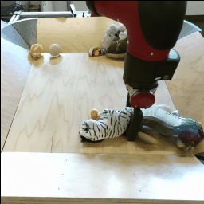
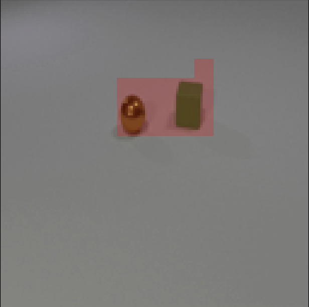
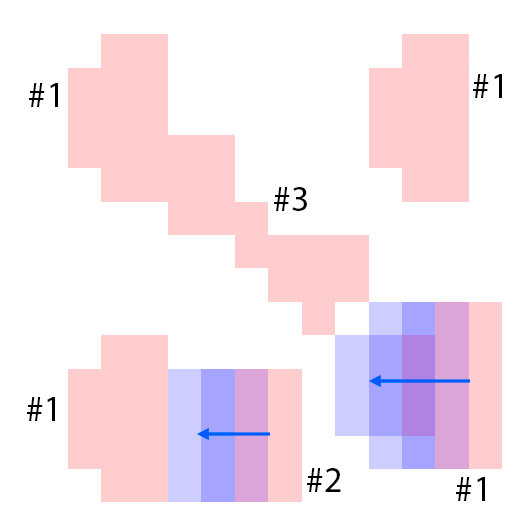

Our model, CAGE, is designed to both compose and animate scenes from a sparse set of visual features. The model is trained in an unsupervised way from a dataset of unannotated videos.






The features are extracted from the regions shown as overlaying red patches. They are then rearranged and pasted to the corresponding locations in the control layout.
Blue patches in the controls correspond to the intended future locations of the objects. Notice the ability of the model to carefully adjust the appearances (e.g. sizes,
shadows and lights) of the objects based on their location. Due to the stochastic nature of the model, the motion of uncontrolled objects is random.